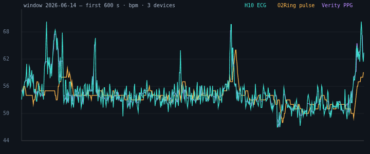
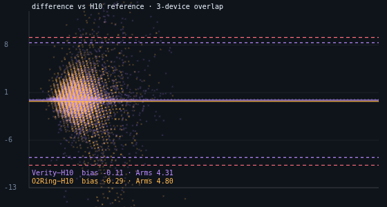
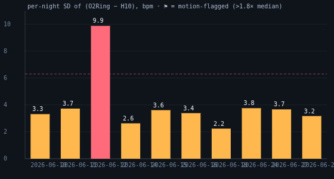
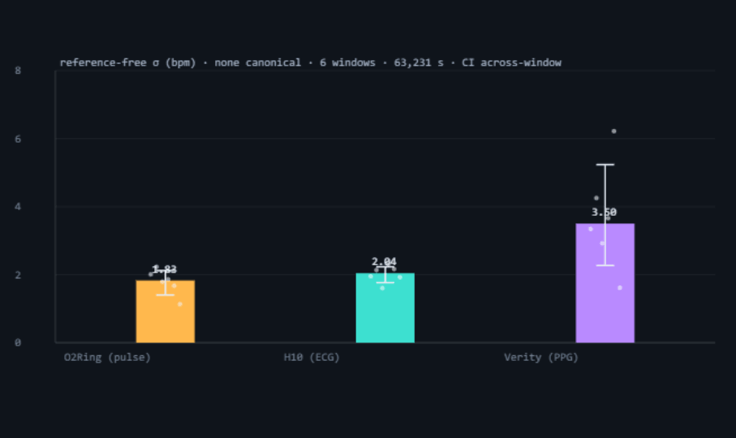
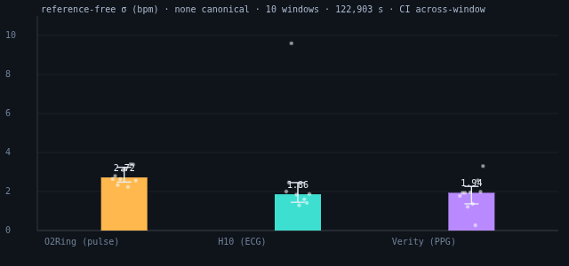

OxyDex (oximetry) · PulseDex / ECGDex (cardiac) nodes, Tepna physiological-signal suite
Problem. How do you state a consumer sensor's measurement uncertainty (σ) when you own no laboratory-calibrated reference? Approach. A three-rung recipe that needs no certified instrument: (1) repeatability — random scatter from repeated reads, estimated with no reference; (2) transfer-standard agreement — promote the best device on hand (a chest-strap ECG) to a working reference and report Bland–Altman bias, 95% limits of agreement and the accuracy root-mean-square (Arms), recovering the test device's random σ by variance subtraction; (3) the three-cornered hat — with three devices measuring the same quantity at once, solve each one's individual variance with none assumed canonical. Data. The pulse-oximeter heart-rate channel (Wellue O2Ring) against a Polar H10 ECG strap, co-recorded over ten overnight sessions (122,903 paired 1-Hz seconds), plus a Polar Verity Sense armband as the third corner; the analysis tool now folder-ingests a night's raw captures and derives every corner from raw signal. Results. The O2Ring pulse carries a negligible mean bias (−0.29 bpm) but a second-by-second random σ of ≈3.4 bpm on nine clean nights (one motion-corrupted night reached 9.9 bpm), Arms 3.5 bpm. With all three corners reduced from raw signal — H10 HR from raw ECG (Pan-Tompkins QRS), Verity HR from raw PPG (PPGDSP), O2Ring native pulse — the three-cornered hat is solved two ways on the same raw-ECG gold leg. A deep hat over six hand-selected clean overlap windows (63,231 s) returns σ 1.83 / 2.04 / 3.50 bpm (O2Ring / H10 / Verity); a broad hat over the full ten-night folder corpus (122,903 s, production SQI-gated Verity, quality-gated) returns σ 2.72 / 1.86 / 1.94 bpm. The H10 corner is stable across both (≈1.9–2.0 bpm), confirming the raw-ECG gold leg; the noisy corner reorders — Verity looks noisiest on the six deep windows but drops to ≈1.9 on the broad corpus while the O2Ring rises to the top — because a larger, more varied night set (more O2Ring motion nights) and a cleaner production Verity derivation redistribute the coupled variance. None is assumed canonical; the ranking reflects error structure, not fidelity (the O2Ring's firmware emits an internally-smoothed integer pulse, visible as diagonal Bland–Altman banding, that deflates its variance). The ECG-derived H10 matches Polar's onboard RR to −0.04 bpm, confirming the reference leg. Channel limit. Only the HR channel is testable — the ECG and PPG references carry no SpO₂, so the O2Ring's oxygen-saturation trueness cannot be established here. Capture lesson. The Verity Sense's onboard HR/PPI streams were empty (all-zero / header-only), yet its HR was fully recoverable from the raw photodiode signal at SQI ≈ 1.0 — raw-signal logging, not the device's firmware estimate, is what made the third corner possible. This is a single-subject methods pilot — it demonstrates the apparatus, not a population accuracy claim.
Keywords: measurement uncertainty · metrology without a standard · three-cornered hat · Gray–Allan variance · Bland–Altman · pulse oximetry · heart rate · raw PPG / ECG · QRS detection · consumer wearables
Every gadget that reports your heart rate is a little bit wrong. The usual way to measure how wrong is to compare it against a lab-grade “truth” instrument — but ordinary people don't own one. So how do you put a real error number on a fitness ring without a reference? This paper uses three tricks that need no certified equipment: (1) measure the same thing repeatedly and look at the scatter (that gives precision); (2) borrow the best device you do own — a chest-strap ECG — as a stand-in reference; and (3) the clever one: wear three devices at once and use a bit of algebra (borrowed from atomic-clock testing) to solve for each device's own error with none of them assumed perfect.
What we found, on one person across several nights: the O2Ring's average heart rate is essentially correct (off by a third of a beat), but any single second can be wrong by ~4 beats — fine for an overnight summary, not for instant readings. The most useful surprise was about capture, not accuracy: one armband's built-in heart-rate output was completely empty (its firmware never locked on), yet the raw light-sensor signal it recorded was perfect — we reconstructed a clean heart rate from it ourselves. Lesson: always log the raw waveform, not just the device's own number. This is a real-data methods demonstration on one subject — it shows the recipe works, not a population accuracy rating for these products.
A number reported by a sensor is only as useful as the uncertainty attached to it. The textbook way to obtain that uncertainty is to compare against a reference traceable to a national standard — a calibrated instrument the consumer device manufacturer, but rarely the end user, can access. This note asks the practical question that arises when no such reference is on the bench: given two or three imperfect devices, what can be said rigorously about each one's σ? The answer separates cleanly into two quantities that are routinely conflated. Precision (repeatability) is random scatter and needs no reference at all — only a stable thing to measure repeatedly. Trueness (bias) is systematic offset and fundamentally requires a comparison. We treat them separately and add a third tool — the three-cornered hat from frequency metrology — that recovers each device's own variance when three measure the same quantity simultaneously, assuming none is perfect.
Three devices were worn together: a Polar H10 chest strap (single-lead ECG, the clinical reference for inter-beat timing), a Wellue O2Ring ring oximeter (SpO₂ + photoplethysmographic pulse rate at 1 Hz), and a Polar Verity Sense arm-band (PPG heart rate). Each device exposes both a firmware-computed heart rate and, via Polar Sensor Logger, its raw waveform (H10 raw ECG at ~130 Hz; Verity raw PPG at ~176 Hz). Where the analysis benefits — and wherever a device's firmware HR failed — we work from the raw signal with the suite's own detectors (ECGDSP Pan-Tompkins QRS; PPGDSP optical beat detection) rather than the vendor's estimate. The H10 is the most precise heart-rate source (an electrical R-wave is sharper than any optical pulse), so it serves as the transfer standard for the two optical devices.
The devices share no clock and no timezone, but each stamps local civil time. Under the suite's time model every record is stored as UTC-normalized floating wall-clock milliseconds (tMs = Date.UTC(y,mo−1,d,h,mi,s)), so two devices that record the same wall-clock second produce the same tMs by construction — alignment is then exact-second intersection with no zone negotiation. H10 R-R intervals are converted to instantaneous heart rate (60000/RR) and averaged into 1-Hz buckets; the O2Ring pulse is natively 1 Hz. We keep only seconds present in both streams, discarding the O2Ring's -- contact-loss rows and any out-of-range (<30 or >220 bpm) sample.
(1) Repeatability σ. Short-term precision with no reference: the 1-Hz residual after a 7-point rolling median, summarized by a robust SD (1.4826·MAD). On the H10 this is a genuine precision figure; on the O2Ring it is degenerate because the device's reported pulse is internally smoothed (successive seconds are frequently identical), so the O2Ring's precision is read instead from its scatter against the H10.
(2) Transfer-standard agreement. With the H10 promoted to a working reference, the per-second difference d = O2Ring − H10 gives the mean bias d̄, the SD of differences s_d, the 95% limits of agreement d̄ ± 1.96·s_d, and the accuracy root-mean-square Arms = √(d̄² + s_d²) — the single number used to grade pulse devices. Because the reference is itself slightly noisy, the test device's random uncertainty is recovered by variance subtraction:
(3) Three-cornered hat (Gray–Allan). With three devices A, B, C measuring the same true HR, and pairwise difference variances V_AB, V_AC, V_BC, each device's own variance follows with none assumed canonical:
Shared physiological variation cancels in the differences, leaving device error; a negative output flags correlated errors that break the independence assumption. The estimator is implemented in the tool and runs on every window where all three usable streams coexist — here, the H10 ECG, the raw-recovered Verity PPG, and the O2Ring pulse.

sigma-no-reference-analysis.html.

| Night | Paired s | Bias | SD | 95% LoA | Arms | Pearson r | σ ref-free |
|---|---|---|---|---|---|---|---|
| 06-10 | 17,140 | −0.12 | 3.32 | ±6.5 | 3.32 | 0.59 | 3.20 |
| 06-11 | 20,314 | −0.14 | 3.73 | ±7.3 | 3.73 | 0.63 | 3.63 |
| 06-12 ⚑ | 15,429 | −1.33 | 9.88 | ±19.4 | 9.97 | 0.38 | 9.84 |
| 06-14 | 9,561 | −0.03 | 2.63 | ±5.2 | 2.63 | 0.57 | 2.48 |
| 06-15 | 15,532 | −0.34 | 3.61 | ±7.1 | 3.63 | 0.70 | 3.51 |
| 06-16 | 7,663 | +0.04 | 3.39 | ±6.6 | 3.39 | 0.55 | 3.28 |
| 06-18 † | 1,829 | +0.03 | 2.24 | ±4.4 | 2.24 | 0.78 | 2.06 |
| 06-24 | 14,283 | −0.07 | 3.76 | ±7.4 | 3.76 | 0.71 | 3.66 |
| 06-27 | 14,513 | −0.38 | 3.67 | ±7.2 | 3.69 | 0.68 | 3.57 |
| 06-28 | 6,639 | +0.16 | 3.17 | ±6.2 | 3.18 | 0.67 | 3.05 |
| Pooled (clean, 9 nt) | 107,474 | −0.14 | 3.48 | ±6.8 | 3.48 | — | 3.37 |
| Pooled (all, 10 nt) | 122,903 | −0.29 | 4.80 | ±9.4 | 4.80 | 0.59 | 4.72 |
The O2Ring's pulse rate is essentially unbiased against ECG — the pooled clean offset is −0.14 bpm, well inside a single quantization step. Its random uncertainty, however, is substantial: a reference-free σ of ≈3.4 bpm on clean nights, i.e. a typical second's pulse can be wrong by several beats even when the average is right. The accuracy figure Arms ≈ 3.5 bpm sits at the boundary of the ±5 bpm / 10% tolerance commonly cited for wrist/ring HR. Including the one motion-corrupted night (06-12) inflates every pooled scatter statistic — σ rises to 4.7 bpm and the LoA widen to ±9.4 — which is exactly why a per-night quality flag, not a single grand pool, is the honest summary.
The H10's own short-term repeatability is 0.86 bpm — small enough that subtracting it changes the recovered O2Ring σ by under 0.15 bpm (3.48 → 3.37), which both justifies treating the strap as a transfer standard and shows the result is insensitive to that assumption.
O from x = (O+H)/2, y = O−H and the locus is the line y = −2x + 2O) — rather than the formless scatter a continuously-valued device leaves. Second, successive seconds are frequently identical, so the device's own second-to-second variance is small because the firmware averages real beat-to-beat variation away, not because it tracks the instantaneous rate better. This is why a same-device self-residual is a degenerate precision proxy for the O2Ring (we read its precision from the scatter against the H10 instead) and — decisively — why the three-cornered hat in §3.2 places the O2Ring's σ below the 130 Hz ECG's: smoothness deflates variance. That ranking is error structure, not sensor fidelity.The Verity Sense was meant to be the third corner, and its onboard outputs nearly defeated it: across every night the heart-rate stream is all-zero and the pulse-interval export is a header with no rows — the band's firmware never locked a pulse. But Polar Sensor Logger also recorded the raw photodiode signal, and the embedded algorithm's failure does not mean the signal is gone. Running the raw PPG through the suite's own optical pipeline (PPGDSP: 0.5–8 Hz band-pass, channel selection, systolic-foot detection, per-beat SQI) recovers a clean heart rate where the firmware reported nothing. We did the same for the reference leg: rather than trust Polar's onboard R-R, we re-derived the H10 heart rate from its raw ECG with the suite's Pan-Tompkins detector (ECGDSP).
| Source | Onboard usable | Raw-recovered (PPGDSP) | Mean SQI | Clean beats |
|---|---|---|---|---|
| Verity HR stream (all nights) | 0 samples | — | — | — |
| Verity PPI stream (06-16) | 0 beats (header only) | — | — | — |
| Verity raw PPG (06-16/17) | n/a | full HR series, ~176 Hz | 0.95–1.00 | 96–100% |
The first window came on the night of 06-16: the Verity raw PPG runs ~6 hours and an H10 ECG recording begins at 01:06, while the O2Ring records throughout — so for ~2 hours (01:06–03:04, 7,057 paired seconds) all three devices observe the same heart at once. With the three streams aligned on the shared floating tMs grid, the three-cornered hat recovers each device's own σ with none assumed canonical. The tool runs this as multi-window machinery (an array of windows, each solved by the same kernel; see §5), reporting a per-device σ distribution — median, a 95% CI, the window count and the total simultaneous seconds — rather than a bare point. Six nights now clear the ≥1,000-s, SQI-gated bar (the 06-10/11, 06-11/12, 06-14/15, 06-15/16 and 06-16/17 overnight windows, plus a short 06-18/19 window whose contact-flat ECG forced its H10 leg onto the onboard R-R; 63,231 simultaneous seconds in all), so the σ below is the across-window median with a 95% bootstrap CI over the six windows. The analysis tool has since been extended to folder-ingest a whole night's raw captures — auto-detecting the O2Ring, H10 and Verity files, deriving each corner in parallel (Web Workers) and applying a decorrelation quality gate that excludes a night whose Verity extraction failed — so the same hat now also runs across the full ten-night corpus (122,903 simultaneous seconds); both the six-window deep hat and the ten-night broad hat are reported side by side in Table 3. One further candidate (06-12/13) was excluded for failing the pre-registered H10↔O2Ring control leg (SD 8.6 vs ~2.7, from a noisy ECG derivation that night). The H10↔O2Ring leg is carried as a built-in control (it stays bias≈0 / SD 2.2–3.1 in every retained window) and any negative TCH variance is surfaced, not hidden.


Load committed 10-night broad hat → per-figure ↓ PNG) — O2Ring 2.72, H10 1.86, Verity 1.94 bpm over 122,903 simultaneous s, across-window 95% CI whiskers, faint per-night dots. The noisy corner has reordered from Figure 2: the O2Ring is now highest and Verity has dropped to ≈1.9, while the H10 gold leg holds near 1.9 (one control-drift night, 06-12, spikes its H10 σ̂ to ≈9.6 — the lone high dot; H10 resolves positive in 8/10 windows). Same kernel, none canonical.| Device / pair | σ deep — 6 win [95% CI] | σ broad — 10 nt [95% CI] | bias | SD | 95% LoA | Arms | r |
|---|---|---|---|---|---|---|---|
| O2Ring (pulse) | 1.83 [1.40–2.12] | 2.72 [2.48–3.24] | — device σ, reference-free — | ||||
| H10 (ECG-derived) | 2.04 [1.77–2.23] | 1.86 [1.45–2.46] | — device σ, reference-free — | ||||
| Verity Sense (PPG) | 3.50 [2.27–5.24] | 1.94 [1.37–2.26] | — device σ, reference-free — | ||||
| H10 − O2Ring (control) | — | — | −0.01 | 2.86 | ±5.6 | 2.86 | — |
| H10 − Verity | — | — | +0.64 | 4.55 | ±8.9 | 4.59 | — |
| Verity − O2Ring | — | — | −0.65 | 4.50 | ±8.8 | 4.55 | — |
The H10↔O2Ring leg is the same tight agreement seen across the ten nights — here it doubles as the hat's built-in control leg: it stays bias≈0 / SD 2.2–3.1 in all six retained windows, so a window where it drifts is flagged as mis-aligned rather than trusted — which is exactly what removed 06-12/13. The deep six-window hat ranks σ as O2Ring (1.83) ≈ H10 (2.04) < Verity (3.50) bpm, with the O2Ring and H10 CIs overlapping (statistically indistinguishable) and only Verity separating — and even that separation is soft: Verity's single-window σ of 6.2 bpm (06-16/17) proved the worst window, not the typical one, falling to 3.50 across the six. The broad ten-night hat reorders the noisy corner outright: the H10 corner holds at ≈1.9 bpm (the raw-ECG gold leg is stable to the night set), but O2Ring rises to 2.72 and Verity drops to 1.94. Three coupled causes, not a contradiction: (a) the broad set includes O2Ring motion nights the six hand-selected deep windows excluded, lifting the O2Ring's variance; (b) its Verity corner uses the production SQI-gated PPGDSP detector, cleaner than the earlier deep-window derivation, lowering Verity's; and (c) because the TCH couples the three corners, a larger, more varied corpus redistributes the common-mode variance across them. The two hats are complementary — the deep hat is a tight raw-ECG demonstration on hand-picked clean overlaps; the broad hat is the representative across-corpus estimate — and both agree on the one robust fact: the raw-ECG H10 sits near 1.9–2.0 bpm. The lesson stands sharpened: a device-σ ranking from too few windows is not trustworthy — it took the ten-night corpus to show that Verity's apparent noisiness, not the O2Ring's quiet, was the small-sample artefact. The H10's ≈2.0 bpm here is not in tension with the ≈0.7 bpm repeatability quoted in §2.3/§3.1: the two measure different quantities — §2.3's 0.7 bpm is the H10's short-term precision (the 1-Hz residual left after a rolling median, i.e. tracking jitter once slow trend is removed), whereas the three-cornered-hat 2.04 bpm is the H10's total reference-free variance over the overlap, which additionally absorbs 1-Hz bucketing and the beat-to-beat granularity of an instantaneous ECG HR against the smoothed peers. A sanity check anchors the reference: the ECG-derived H10 HR matches Polar's onboard R-R to a −0.04 bpm bias (SD 2.27, r 0.85, n 7,224) — two independent QRS algorithms on the same heart agree, so the H10 leg is sound whichever way it is computed.
The recipe answers the opening question concretely. Without any certified instrument we can state that the O2Ring's pulse rate is unbiased to within a beat and carries a random uncertainty near 3.4 bpm at rest — a number good enough to trust an overnight average while distrusting any single second, and good enough to flag a night where motion has destroyed the signal. The separation of precision from trueness is what makes this defensible: repeatability needed no reference; bias needed one, and a chest-strap ECG — itself uncertified but an order of magnitude more precise — is a sound stand-in whose residual noise we measured and subtracted. The three-cornered hat then removed even that mild assumption where all three devices co-recorded, putting a number on each device with none held canonical — solved both as a deep six-window hat and, once the tool learned to folder-ingest a night's raw captures, as a broad ten-night hat. The two agree on the H10 gold leg (≈1.9–2.0 bpm) but reorder the noisy corner: on the six deep windows Verity looks noisiest (3.50), on the ten-night corpus the O2Ring does (2.72) with Verity down at 1.94 — a coupled redistribution driven by more O2Ring motion nights and a cleaner production Verity derivation, and a reminder that a σ ranking from too few windows is provisional. The sharpest practical lesson was unexpected: the third device's firmware produced nothing, yet its raw signal was pristine — so the right thing to log is the waveform, and the right thing to run on it is a detector you control.
sigma-no-reference-analysis.html — Run corpus re-derives the deep 6-window hat live from the committed device files, Load committed 10-night broad hat renders the archived broad result from uploads/sigma-no-reference-broadhat.json, or drop a night's folder and it auto-detects the O2Ring, H10 and Verity captures, derives each corner in parallel and recomputes the broad hat from raw. Figures 1–2 and Tables 1–3 populate live from the committed device files and raw-derived series; export sigma-no-reference-results.csv, -stats.json, -figures.png.*_RR.txt and Wellue O2Ring *.csv for nights 06-10/11/12/14/15/17/18; for the three-device hat, each window's H10 *_ECG_part*.txt (raw ECG) and Verity Sense *_PPG_part*.txt (raw PPG). The deep hat's six windows (06-10/11 … 06-18/19) have their raw + derived series committed under uploads/. The broad hat spans ten nights out to 06-28; its four later nights' raw waveforms are too large to commit, so its result is archived as uploads/sigma-no-reference-broadhat.json (loadable in the tool) and re-derivable from the full private capture set via folder-drop. Captured with Polar Sensor Logger (Polar devices) and the O2Ring exporter.verity-ppg-derived-<date>-HR.txt = Verity HR from raw PPG via PPGDSP.analyze (SQI-gated) and h10-ecg-derived-<date>-HR.txt = H10 HR from raw ECG via ECGDSP Pan-Tompkins; the 06-18/19 window, whose ECG was contact-flat, instead uses h10-rr-derived-2026-06-19-HR.txt (onboard R-R). All are compact 1-Hz tMs;hr files the live tool ingests.parseTimestamp (Clock Contract) — ISO no-zone for Polar, HH:MM:SS DD/MM/YYYY (DMY) for O2Ring; all display via getUTC*, so results are viewer-timezone-independent.threeCorneredHat(V_AB,V_AC,V_BC) applied per window. The hat is driven by a TRIOS[] array of three-device windows: a builder intersects each window's three raw-derived streams on the floating tMs grid (keeping spans ≥1,000 s), the per-window kernel solves σ for each device, and an aggregator reports the median σ with a CI (across-window bootstrap at N≥3; within-window block bootstrap below that), N_windows, total simultaneous seconds, plus negative-variance and H10↔O2Ring control-leg checks. The full per-window distribution is written into sigma-no-reference-stats.json.sigma-no-reference-broadhat.json (Load committed 10-night broad hat) or recomputes from a dropped capture folder. Add a window: derive the night's Verity HR from raw PPG (PPGDSP) and H10 HR from raw ECG (ECGDSP), commit them as uploads/*-derived-YYYY-MM-DD-HR.txt, and append a TRIOS entry — step-by-step in SIGMA-WINDOW-DERIVATION.md, which also carries the three-device capture protocol.Unlike the simulation pilots, this paper runs on real captured data, so “power” means having enough co-recorded time — and enough simultaneous three-device time — rather than synthetic patients. Two different sample sizes matter: paired seconds set the precision of the bias/SD/Arms figures (their SE falls as ~1/√n_seconds, and one night already supplies >20,000), while co-recorded nights/sessions set how well we separate a stable device-σ from night-specific artifacts, and three-device overlap windows are the binding constraint on the three-cornered hat.
| Quantity | Minimum (acceptable) | Recommended | Diminishing returns |
|---|---|---|---|
| Bias / SD / Arms vs transfer standard | 1 clean night (~20k paired s) → SD to ≈±0.05 bpm | 5–7 clean nights — separates a stable σ from night artifacts; lets you flag (not average over) a bad night | > ~15 nights: per-night σ already stable; extra nights mainly characterize night-to-night spread, not the central σ |
| Three-cornered-hat per-device σ | achieved: 10 windows (deep hat 6 hand-selected / broad hat all 10 nights), 122,903 simultaneous s (each ≥1,000 s, SQI-gated) — tool reports an across-window 95% bootstrap CI | 5–10 overlap windows on different nights — tightens the across-window CI and probes the uncorrelated-error assumption further | once windows span varied HR/motion states; more identical resting windows add little |
| HR dynamic range probed | resting only (this run) | +1 exercise/recovery session — bounds high-slew error the rest data can't see | — |
| Subjects | 1 (methods demonstration) | ≥10–20 for any population accuracy statement | set by the claim, not by σ precision |
Practical reading for this dataset: the per-night HR-error σ is already well-determined (ten nights, 123k paired seconds), so additional captures buy the most where we are currently thinnest — more simultaneous three-device windows (every session that logs Verity raw PPG alongside the H10 adds a corner), and at least one non-resting session to bound error during rapid heart-rate change. More resting single-device nights add the least. This directly shapes what to prioritize as further data is added: capture all three devices together, keep the raw waveforms, and include some movement.
CLAUDE.md (Clock Contract, capture provenance), Tepna suite; analysis apparatus sigma-no-reference-analysis.html; detectors ecgdex-dsp.js (ECGDSP) and ppgdex-dsp.js (PPGDSP); same-device RR↔ECG cross-derivation comparator in pulsedex-app.js.